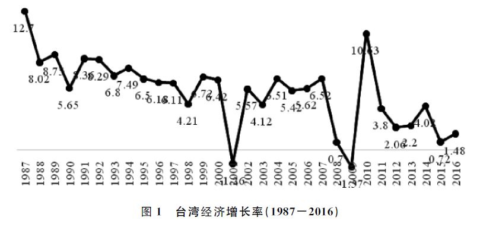
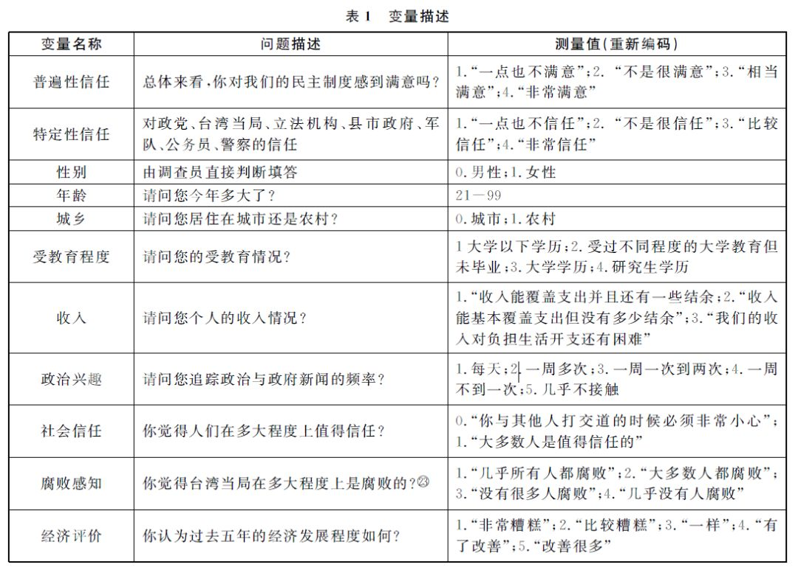

收录于合集
文献来源： 韩冬临,杨端程,陆屹洲.经济绩效、政治腐败与政治信任:台湾公众政治信任变迁研究(2001-2014)[J].上海交通大学学报(哲学社会科学版),2018(04):48-59.
作者简介：
韩冬临，中国人民大学国际关系学院政治学系副教授。
杨端程，中国人民大学国际关系学院政治学系博士研究生，“政文观止Poliview”联合发起人。
陆屹洲，中国人民大学国际关系学院政治学系博士研究生，“政文观止Poliview”联合发起人。
摘要： 政治信任反映了民心向背，是衡量政体合法性的重要标准。进入新世纪以来，无论是传统的自由民主国家还是在第三波民主化浪潮中实现民主转型的新兴民主国家和地区，其公众的政治信任都面临普遍下降的趋势。其中，中国台湾地区的政治信任与之相比既有普遍性也表现出特殊性。本文以实证研究为依托，发现在台湾民主转型及巩固的进程中，经济绩效、政治腐败深刻地影响了台湾公众的政治信任。具而言之，民主化导致的党争民主使得台湾公众对政治绩效、经济绩效的评价下降，进而影响到公众的政治信任。因此，这一特殊性现象有助于重新思考既有民主制度与政治信任之间的关系，从而为比较政治理论的发展与创新提供新的思考视角。
关键词： 经济绩效；政治腐败；中国台湾；政治信任
虽然各个国家的政体各不相同，但是有效治理都离不开公众的信任与支持。政治信任体现了政体合法性，是民心向背的反映。但是从上世纪70年代开始，以美国、西欧和日本为代表的西方民主国家内部都出现了公众对政府乃至政治体制信心衰落的局面，引发“民主的危机”。因此，分析政治信任的影响因素，并且找出提升之道，是比较政治研究的重要议题。
在分析政治信任的诸多影响因素中，制度性的因素格外重要。民主化的经典研究认为发生政体转型的根本原因在于政权合法性的丧失。因此，民主政权将拥有更高的合法性，也将得到更多公众的拥护。然而，民主转型带来的现实却并非如此，例如选举上台的政府面临着政治腐败、对公众的回应不足、治理能力低下等一系列问题，令人担忧“第三波民主化”会长期陷入低质量的停滞状态，并消弭所有深化改革的可能。对此，英格尔哈特（Ronald Inglehart）指出，尽管实现民主转型的国家达到了形式上的标准，但是这与达到稳定的民主政治即所谓民主巩固还是两码事。同时，政治信任的变迁对完成民主转型的政权来说更为重要，它不仅是判断民主巩固的重要标准，也是测量民主质量的标准之一。尽管民主化是当代世界政治演化的重要趋势，但是其表现还不容乐观。一些实证研究进一步显示，民主转型未必带来政治信任的提升，相反，新兴民主国家随着民主“蜜月期”的进行性消逝，公众的政治信任非但没有上升反而面临下降的困境。
中国台湾地区为比较民主化与政治信任提供了难得的案例。一方面，台湾民主化迄今已有30年，如果按照“自由之家”（Freedom House）和“政体4”（Polity IV）的评价标准划分，台湾地区已经从威权政体完全转型为自由民主政体。但是另一方面，一些自由民主政权面临着治理能力低下的困境。因此，本文旨在通过采用历时数据来分析台湾民主化之后，民主制度与公众政治信任之间的关系。全文首先回顾了民主制度与政治信任的关系，特别是从台湾的经济绩效和政治腐败两个视角进行分析。然后是选取数据、建立模型和回归分析，最后是对全文分析得出的结论进行总结。
一、 民主化与政治信任：
经济绩效和政治腐败
尽管政治信任存在不同的定义，但是毫无疑问的是它对整个政治体系具有非常重要的作用。如果参考伊斯顿（David Easton）的经典理论，可以将公众对政治体系的支持分为特定性支持（Specific Support）与普遍性支持（Diffuse Support），前者是公众对政治系统中诸如政党、政府、国会、法院等具体的政治机构的信任，而后者是指公众对整个政治共同体和政治系统的认同与支持。达尔顿（Russell Dalton）在此基础上做了进一步的细化，他们将政治信任具体划分到政治共同体（国家）、政治原则、政治制度、政治绩效以及政治权威（当权者）等维度的光谱上。其次，政治信任还反映了民主制度运行的质量。一般认为，在民主制度下，法律和公共政策的制定都要尽可能地开放公众参与，而政府相应的施政绩效也将直接影响到公众的心理认知及评估，最终反馈到政治信任层面，形成公众与政府间的双向互动。
事实上，政治信任受到多方面因素的影响，即包括个人层面因素，也包含结构层面因素。其中，制度绩效至关重要，良好的制度绩效有助于提高公众的政治信任，反之则让人心生不满。从制度的生成与变迁的逻辑看，制度环境的变迁决定制度安排，进而影响到制度绩效。同时，文化因素也是政治信任的重要来源，正如史天健教授指出，与完成民主转型的台湾地区相比，中国大陆的政治信任更多在于儒家政治文化的支持，而台湾的政治信任更多地与政府的治理绩效相关联。因此，本研究主要从制度的结构性因素和制度运转绩效两个层面出发，分析台湾公众政治信任变迁的原因。
本研究认为，台湾公众政治信任下降最重要的原因来自于经济和政治两个方面，主要是台湾民主化带来的政党政治发展导致恶性的党争民主，一方面使得政策制定高度政治化，阻碍了经济发展，而经济停滞导致了公众的不满。另一方面，政党之间的政治斗争以“反腐败”为主线，并且与经济因素交互作用，共同损害了公众的政治信任。
就经济层面而言，一方面，低迷的经济表现招致公众不满，从而影响政治信任。这符合“经济绩效是任何政权合法性的最重要来源”这一观点。亨廷顿（Samuel Huntington）也曾指出，即使在新生的民主政权中，经济持续的低迷将累积民众的不满，动摇其的合法性。如果再爆发经济危机，那么就为民主回潮和威权复辟提供了很大可能。
就政治层面而言，虽然学界对民主的定义一直存在争议，但是西方自由民主政体的核心就是保证多党竞争性选举。因此，“多党自由竞选、轮流执政”是其绕不开的核心判断标准。从这一逻辑出发，西方学界普遍认为，与威权制度相比，民主制度拥有诸多的优点，其陈述逻辑为由于存在多党轮流执政的机制，朝野两党将互相监督，法治将得到充分发展，政治腐败将得到最大程度的遏制。
然而上述的表述是被高度抽象和简单化的。首先，西式民主的核心——“多党竞争、轮流执政”在世界政治史上经历了复杂的流变。在政党形成的初期，其就有负面色彩，典型代表是“政党分赃”制度。《联邦党人文集》对其有过经典的论述——党争只会撕裂社会共识和破坏公共利益，但是在近代国家内直接民主不能适用的情况下，人们必须通过选举代表去参与政治，通过政党表达利益诉求是大势所趋。为了避免撕裂社会共识，必须要靠共和制来消除党争的弊端，确保共同体的利益。米歇尔斯（Robert Michels）对党争政治也持悲观看法，他指出：党争非但不可能实现真正的民主，无论是哪个国家，党争最终导向的都是寡头统治。在福山（Francis Fukuyama）看来，美国党争民主实质上是利益集团相互倾轧，由此产生的“否决型政体”（vetocracy）导致政策难产，成为政治衰败的根源。因此，对国家治理而言，党争民主并不一定产生正面的效果，往往可能适得其反。有学者进一步指出，尽管多党制、比例代表制和民主满意度有正向联系，但腐败和收入不平等则会抑制这种联系。因此在这层意义上多党竞争选举制度对民主合法性的贡献极为有限。
其次，竞争性选举本身离不开各政党的相互攻击。在竞选过程中，需要不断攻击对手，才能获得支持和选票。同样，在执政过程中，反对党需要不断攻击执政党的政策，从而积累民意基础，为下次选举做准备。就台湾而言，尽管有学者分析道，马英九当局提出的议案难通过的制度根源在于立法机构的议事规则和国民党自身不能协调好党政关系，但从整个政治运行过程来看，党争才是无效治理的根源。因为每当执政党出台政策就会受到反对党纯粹的反对而不顾经济社会发展和改善民生的需要。例如因为电力短缺，台湾先前的三座核电站已不足以支持全岛供电而需要另建一座核电站，但是第四座核电站（即“核四”）自规划动工以来经历多次停建，至今未能投入使用。特别是民进党一直将“反核四”作为与国民党斗争的经济纲领。在首次政党轮替以后，时任行政机构主管张俊雄宣布停建“核四”，招致立法机构中的多数派——泛蓝阵营的不满，为此，蓝营先后提出罢免案，迫使陈水扁当局重启“核四”建设，但之后一直拖延到马英九执政的第二个任期才重新开始。这时，作为反对党的民进党又提出停建“核四”的要求并发动民众上街游行，致“核四”再次停工。
然而政党在这些社会民生议题上的冲突还不是最激烈的，台湾地区的竞争性选举与其他多数国家最大的不同在于政治上的激烈对抗。首先，在竞争性选举中，政党通常都需要提出醒目的议题，从而获得支持。大部分国家的选举议题主要关乎发展经济、改善民生，而台湾地区的政党在选举中却常常以政治为主线展开论战。“统独”和“反腐败”成为最重要的两大议题。首先，与经济民生议题不同，“统独”议题的煽动力更强，是历次选举中的焦点。对此，林冈教授等学者利用台湾选举与民主化调查数据库（Taiwan’s Election and Democratization Study, TEDS）的时间序列数据加以佐证。他们指出，从2004-2012年间，“统独”议题对选民的投票行为产生了显著影响。与此相应的是，在2001-2008年之间的选举中，社会福利议题并没有对选民投票行为产生影响。其次，虽然“统独”是民主化导致党争激化的重要一面，但是台湾的政党对抗更在于“以反腐败为名”的激烈斗争，从当局领导人到各级民意代表，都有因贪腐而锒铛入狱的案例，这些现象的高频发生既损害了民主的制度也损害了公众的信心。其结果是整个台湾社会政治化，经济发展停滞，民生改善成效甚微。换言之，与其他民主已经巩固的政权相比，由于台湾地区政治的特殊性，导致制度绩效更为不佳。

例如，经济层面，台湾地区的经济绩效呈现下滑的态势。在上世纪60年代到80年代，台湾经济的成功很大程度得益于“政府引导的发展”。据台湾统计部门的数据显示，从1950年到1990年，台湾经济突飞猛进，GDP年平均增长率一度达到9％，在1990年GDP更是一度高达中国大陆全部GDP的43.8%。但是正如图1所示，在民主化之后，其经济增长不断下降。进入新世纪以来特别是在民进党执政8年间，台湾GDP增速从6.42%迅速下降到0.70%。在完成第二次政党轮替后，特别是在马英九的第二届任期末，其经济增长率更是下跌到0.72%。
在政治层面，本意是便利两岸服务贸易和经济联系的协议也因为党争搁浅。从台湾经济主管部门公布的对外贸易数据来看，从2001年来至2015年，台湾对大陆的贸易出口迅速增长，中国大陆逐渐成为台湾的最大出口地。而在2014年，由于岛内“反服贸”运动等事件冲击，台湾对大陆出口下滑。在这些事件中，民进党等政治势力不仅将国民党和公众建构成“他者”和“人民”的关系，而且将中国大陆与台湾建构成截然对立的“敌我”关系。为了在2016年的选举中赢得执政，民进党先后在立法机构杯葛议事，号召青年学生参加“反服贸”、“反课纲”等街头运动，致使本地经济社会发展再度停滞。而即使民进党“全面执政”，又因为年金改革、“一例一休”、“前瞻计划”等政策损害了其他政党和选民利益，导致自身即使完全执政也无法推行施政纲领。因此，无论是国民党还是民进党执政，执政当局的治理能力基本为党争所消解，无法有为应对。
二、数据、变量与模型
为了进一步分析台湾公众政治信任的变迁，本文采用亚洲民主动态调查（Asian Barometer Survey，ABS）分别在2001年、2006年、2010年以及2014年对台湾地区常住人口进行抽样调查的数据进行分析。作为大型的跨地区调查，其调查时间先后覆盖了岛内三次地区领导人选举以及四次民意代表选举。特别是，2008年的选举还促成了第二次政党轮替，因此为跨时段分析公众政治信任的变化提供了可行性。为此，本文将特定性信任和普遍性信任设置为因变量，选取腐败感知、经济评价作为解释变量。此外，模型也包括了一系列控制变量，分别是性别、年龄、城乡、教育、收入等人口学变量和政治兴趣、社会信任等变量。
值得指出的是，将对政党、执政当局、立法机构、县市政府、军队、公务员、警察等各个机构的信任作为特定性信任的测量方法已经为学界所普遍认可。而关于对普遍性信任的测量还存在不同的看法。随着民意调查技术的不断改进，在第3波和第4波调查中专设了对普遍性信任的考察题目，但是在4次的调查问卷中，并没有完全一致的问题测量普遍性信任。同时，政治信任变迁的外部环境在于从威权向民主转型及巩固的制度变迁过程，而民主满意度是区分威权与民主政体中公众政治信任的重要标准。因此，本文采用民主满意度作为普遍性信任的测量的指标。详细的测量方法参见表1。

其次本文对变量进行描述性分析，各变量的统计结果如表2所示：
从图2可以直观看出，整体而言，台湾的政治信任在2001-2014年有了明显的下降。图3则显示，台湾公众的民主满意度经历了先降后升的过程，尽管约有6成公众感到满意，但是仍然有4成左右的公众对民主制度的运行感到并不满意。
三、数据分析
本部分内容以特定性信任和普遍性信任为因变量，进行回归分析，结果如下所示。
表3是对特定性信任的多元线性回归结果，表4是对普遍性信任和特定性信任的多元线性回归结果，其中普遍性信任采用民主的满意度，而特定性信任的测量是表3中各个政治机构信任的总和。
本文在全部模型中都放入了作为控制变量的社会人口学变量和时间节点，在模型1和模型4中加入了“政治兴趣”和“社会信任”，在模型2和模型5中加入了“腐败感知”，而在模型3和模型6中加入了“经济评价”。从调整后的R2可见，尽管模型整体的解释力还有待提高，但是随着自变量的加入，模型的解释力不断增强。
接下来，本文对各个模型下自变量与因变量之间的关系进行解释。首先是制度绩效因素。如前所述，政治腐败对政治信任具有非常重要的影响。尽管亨廷顿曾言“一定量的腐化不失为一种打通现代化道路的润滑剂”，但是这一论断的前提是旧社会中僵化的政治制度阻碍了政治参与。因此，腐败可以作为“权宜之计”。同时，亨廷顿特别指出，一旦强大的政党制度建立起来，将有助于遏制腐败。然而现实却并非如此，尽管在第三波民主化浪潮中完成转型的国家和地区都建立起了党争民主制度，但是腐败率却没有因此而降低，甚至更加恶化。例如，以加纳、贝宁为代表的非洲国家，其民主化进程中表现出的政治庇护主义、政治分赃和腐败都破坏了民主制度。在亚洲地区，对日本、韩国、菲律宾、泰国和台湾等五个完成民主转型的国家和地区而言，政治文化和选举制度不仅不能调节腐败给政治信任造成的消极影响，反而助推了政治腐败的扩散。
回归模型结果显示，公众腐败感知和政党评价对因变量的影响都很显著。受访者感受到的腐败程度越严重，其对民主制度的普遍性信任和政府的信任也就越低。这很大程度是因为台湾的党争民主表现出明显的以“反腐败”为主线的“秋后算账”局面。在大部分西方国家的选举中，反对党都是“女王陛下的忠诚反对派”，“愿赌服输”，很少“秋后算账”。然而在台湾选举后，执政党充分利用自己的执政地位，反复调查在野党的“贪腐经历”，从而打击对手，巩固自己执政地位。因此，台湾政坛腐败的曝光程度越来越大。在民主化早期，李登辉治下的“黑金政治”，重创了国民党和直选上台的当局。因此在新千禧年之际，公众变革的诉求最终推动了政党轮替。虽然台湾公众一度对新当局有所期待，但是在陈水扁及其亲信弊案相继曝光后，公众对整个民主制度的腐败感知不断恶化。因此，即使后来陈水扁等人被移送法办，依然没有改善民众的感知。在二次政党轮替后，尽管上台执政的马英九个人形象良好，但其团队中先后有行政机构秘书长林益世、国民党主席办公室主任赖素如等高级官员涉贪被诉，恶化了执政当局的形象，而时任立法机构负责人王金平涉嫌“关说”及由此受到的党纪惩处更是被社会普遍视为马王二人间的权力争斗。
上述政党以“反腐”为名进行恶斗的弊案曝光仅仅是冰山一角，但其导致的直接结果就是台湾出现越来越多的贪腐案，使得公众认为当局和整个政治体制越来越腐败，损害了其政治信任。特别是随着台湾民主化，媒体也得以自由化。由此当局的各种负面消息被不断扩散，强化了公众的感知。
接下来是对人口学变量的解释。模型3显示，性别对普遍性信任有微弱的影响。相比女性，男性对于民主的满意度更高。在6个模型中，年龄都产生了显著影响。既有研究表明，出生年代不仅用于测量“青少年—中年—老年”生命历程的影响，也是形成政治影响的关键。纵观历史，台湾公众大致经历了日本殖民时代、国民党威权统治阶段以及民主化时代。因此，在普遍性信任方面，不同年龄的公众呈现出差异，体现为年龄越小的公众越信任民主，而年龄越大的人则对民主越不信任。这可能是因为长者先后经历过殖民统治和威权统治，其价值观受到当局的型塑，对民主这一新生事物难以适应，而年轻人没有经历过压迫性的社会生活，其价值观的形成伴随着民主化的推进，因此对民主制度保持较高的信任。另一方面，年龄越大的民众对于特定的政府机构却更信任，这也可能是跟其威权主义价值观的形塑有关。模型1显示，城乡对普遍性信任有一定的影响。相比城市居民，农村居民对民主的满意度更高。教育对于两个因变量都产生了影响，而且对特定性信任的影响更强烈。受教育程度越高的民众对于政府越不信任，这与英格尔哈特和诺里斯等人提出的“后物质主义价值观”和“批判性公民”假设相符。同时，模型的结果表明，收入明显地影响了受访者的普遍性信任，但其对政府信任的影响则不是很显著。具而言之，收入越高的群体越赞成民主制度。反之，收入越低的受访者越不认可民主制度。这一方面反映了精英与大众政治态度的分裂，另一方面也与“既得利益者与执政当局捆绑在一起”的观点相符。
再者，政治兴趣对因变量基本没有影响，但是社会信任对于两种信任的影响则非常显著。众所周知，社会信任是社会资本的重要组成部分。唐文方将社会信任归纳为内在效能感，指出人与人之间的信任有助于提高公众对民主原则的支持。其次，社会资本不仅推动了公民在政治社会化过程中对政治的理解，而且也是增强共同体的凝聚力和提升治理绩效的关键，帕特南（Robert Putnam）将“信任、规范以及网络等通过促进合作行为来提高社会的效率”这一“社会组织的特征”归纳为社会资本。通过回归分析可见，在所有的模型中，社会信任对于两个因变量的影响都非常显著。社会信任越强，民主满意度越高，对政府也就越信任。
最后，“经济绩效”对特定性信任和普遍性信任都影响显著，验证了“经济绩效增进政治合法性”的观点，即如果民众认为过去全岛的经济状况得到了改善，政治信任就越高。但是这仅仅是数据与理论层面的逻辑，现实却并非如此。正如近10年来，台湾的经济增长率逐渐下降，仅有的经济成果也常被利益集团攫取，普通公众并未感受到生活的改善。同时，台湾的社会不平等加剧，社会公正也在不断恶化。最近两波的ABS调查结果显示，从2010-2014年间，台湾公众的社会公正感知也在下降，就“所有族群的人都能被政府平等对待”、“无论贫富都能被政府平等对待”两个问题回答的不同意度分别从51.4%和52.1%上升到72.2%和74.9%。因此，经济领域内的就业、公正等民生关切问题的恶化趋势不仅是激化社会矛盾的诱因，也是削弱政治信任的关键。因此，对台湾未来经济表现作追踪观察，仍将是分析其公众政治信任变迁的重要窗口。
四、总结与讨论
政治信任是对民主质量和政体合法性的反映。自民主化以来，台湾公众政治信任的下降，既有普遍性，又有特殊性。在比较政治的视野下，自由民主国家公众的政治信任都在不断下降，因此台湾地区公众政治信任的下降，并不是孤立的个案。然而台湾公众政治信任的下降，又具有特殊性，最明显的体现就是特定性信任的大幅度下降，为新兴民主政体所罕见。而对其分析又超越了之前跨国研究的普遍性解释，必须考虑台湾自身政治经济变迁的特殊性。其中，政党政治的恶性发展导致整体经济发展的停滞，执政党与反对党又通过“反腐”互相对抗。两者的结合导致台湾公众对政治绩效、经济绩效的评价下降，进而恶化了公众的政治信任。
当然，限于篇幅，本文并没有展开分析文化和价值观层面的影响因素，而仅仅采用了“社会信任”这一变量。这并不是说文化因素不重要，相反，在政治信任的分析框架中，文化的因素具有非常重要的影响。可以预料的是，文化因素在未来政治信任的研究中，仍然会扮演非常重要的角色。因此，连接台湾与中国大陆的儒家政治文化，对海峡两岸政治信任的研究都具有启发意义。
来自台湾地区的研究结果值得我们进一步思考民主化的定义和未来。尽管台湾在选举层面实现了政党和平轮替，并且也被认为民主得以深化和巩固，但是党争民主的畸形发展由此带来的经济停滞和政治腐败，却说明其政治发展并不完善。因此，结束政党恶斗，走向“善治”，应该同样属于民主巩固的内容。如何拓宽亨廷顿对民主巩固的定义，纳入“政党趋同”、政治清明、社会稳定等经验指标，或可有助于丰富当代民主理论对一些特定概念的界定。最后，在民主政体中，公众政治信任的不断下降，会导致民主制度的崩溃吗？抑或是，在民主政体中，公众低水平的政治信任是常态，而威权国家较高的政治信任水平完全不可持续？对这些问题的回答不仅有待于世界政治的不断发展，也有赖于比较政治研究中理论和实证的不断创新。
感谢：
台湾大学政治学系胡佛教授和朱云汉教授主持之Asian Barometer Survey计划
厦门大学台湾研究院与清华大学台湾研究院主办之“首届两岸治理研究工作坊”及点评专家
匿名审稿专家
编辑： 吴温泉


“广告点一点，也是支持学术公益 ”
”